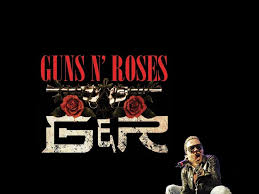

The Beatles fue una banda de pop/rock inglesa activa durante la década de 1960, y reconocida como la más exitosa comercialmente
y la más alabada por la crítica en la historia de la música popular.Formada en Liverpool, estuvo constituida
desde 1962 por John Lennon (guitarra rítmica, vocalista), Paul McCartney (bajo, vocalista), George Harrison (guitarra
solista, vocalista) y Ringo Starr (batería, vocalista). Enraizada en el skiffle y el rock and roll de los años
1950, la banda trabajó más tarde con distintos géneros musicales, que iban desde las baladas pop hasta el rock
psicodélico, incorporando a menudo elementos clásicos, entre otros, de forma innovadora en sus canciones. La
naturaleza de su enorme popularidad, que había emergido primeramente con la moda de la «Beatlemanía», se transformó
al tiempo que sus composiciones se volvieron más sofisticadas. Llegaron a ser percibidos como la encarnación
de los ideales progresistas, extendiendo su influencia en las revoluciones sociales y culturales de la década
de 1960.

Guns N' Roses GNR London Stadium 2017 3 (cropped).jpg Guns N' Roses en 2017. De izquierda a derecha, Dizzy Reed, Richard
Fortus, Duff McKagan, Axl Rose, Slash, Melissa Reese y Frank Ferrer Datos generales Origen Los Ángeles, California,
Bandera de Estados Unidos Estados Unidos Información artística Género(s) Hard rock1 Heavy metal1 Punk rock2
Blues rock3 Glam metal4 Hair metal5 Sleaze rock6 Período de actividad 1985-presente Discográfica(s) Geffen
UZI Suicide Black Frog Artistas relacionados AC/DC, Aerosmith, Alice Cooper, Bob Dylan, Hollywood Rose, L.A.
Guns, Lenny Kravitz, Metallica, Mötley Crüe, Skid Row, Sebastian Bach Web Sitio web Página oficial Ficha Guns
N' Roses en IMDb Miembros Axl Rose Slash Duff McKagan Dizzy Reed Richard Fortus Frank Ferrer Melissa Reese Antiguos
miembros Ole Beich Tracii Guns Rob Gardner Steven Adler Izzy Stradlin Gilby Clarke Matt Sorum Josh Freese Paul
Tobias Buckethead Bryan "Brain" Mantia Robin Finck Ron Thal DJ Ashba Tommy Stinson Chris Pitman [editar datos
en Wikidata] Guns N' Roses es una banda estadounidense de hard rock formada en Hollywood (Los Ángeles, California)
en 1985. El grupo fue fundado por Axl Rose y el guitarrista rítmico Izzy Stradlin.7 Asi mismo, la banda es uno
de los números artísticos más exitosos de la historia musical, debido a sus grandes ventas, numerosos galardones
y repercusión mundial hasta la fecha. La formación actual cuenta con el vocalista Axl Rose, el guitarrista rítmico
Richard Fortus, los tecladistas Dizzy Reed y Melissa Reese, el baterista Frank Ferrer, el bajista Duff McKagan
y el guitarrista líder Slash, estos dos últimos, considerados miembros clásicos de la agrupación, retomaron su
lugar en la banda después de 23 años. La banda ha vendido más de 150 millones de álbumes en todo el mundo,89
incluyendo más de 58 millones de álbumes en los Estados Unidos.10 El álbum Appetite for Destruction de 1987
ha vendido 3511 millones de copias a nivel mundial y alcanzó el número 1 en el Billboard 200 en Estados Unidos.
Además, cuatro canciones del álbum ingresaron en el Top 10 en la Billboard Hot 100, y «Sweet Child o' Mine» quedó
en el número uno.12 Su álbum de 1988 G N' R Lies ha vendido más de 14 millones de copias en todo el mundo y
su canción «Patience» entró en el Top 5 del Billboard Hot 100 y el álbum alcanzó el número dos en el Billboard
200.